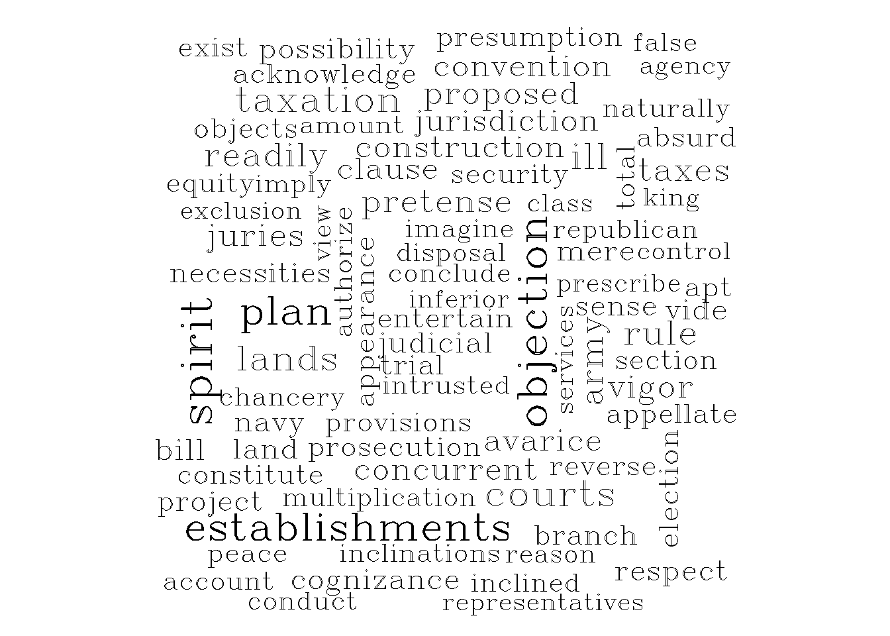

While a multinomial language model looks at text as a series of words and focuses on how likely each word is to appear, a vector space model treats text as a point in space, letting us measure how similar two texts are based on distance or direction. In essence, MLM is all about word probabilities – that is, figuring out which words are more likely in a document, whereas VSMs leverage linear algebra to turn text into vectors so we can compare documents based on their overall content, not just exact word counts.
As you might infer, this forms the key idea behind virtually all similarity-based measures of text: the assumption that documents sharing similar features – i.e., whether word frequencies or other vectorized representations (…) are semantically alike.
GSR (Ch. 7) gives a great overview using the Federalist Papers example to demonstrate how we can use inner products to articulate similar writing styles – the idea again being that greater values represent similar documents (or authorship/writing styles). Using our specific adjustments from the Multinomial Language Model, we can show how Madison and Hamilton’s writing styles are similar than Madison and Jay (and by a considerable margin):
\[\mathbf{W_{Madison}} \cdot \mathbf{W_{Hamilton}} = (477, 1, 17, 7, 12) \cdot (861, 13, 102, 374, 1) \] \[= (477 \times 861) + (1 \times 13) + (17 \times 102) + (7 \times 374) + (12 \times 1) \] \[= 410,697\]
\[\mathbf{W_{Madison}} \cdot \mathbf{W_{Jay}} = (477, 1, 17, 7, 12) \cdot (82, 1, 0, 1, 0, 84) \] \[= (477 \times 82) + (1 \times 1) + (17 \times 0) + (7 \times 0) + (12 \times 84)\] \[= 40,123\]
We can use a similar intuition to (again) attempt to discern the authorship of a disputed essay. However, as GSR note, the magnitude of the vectors – i.e., the volume of observations we have to recover an accurate illustration of each authors’ word choice – might give Hamilton a clear edge due to the sheer volume of word co-occurrence. This raises an important question: Is similarity (here, prescribing authorship of disputed documents) best represented by the volume of word co-occurrence, or the distribution of that co-occurrence? Put differently, should it matter more that Hamilton used the four of the five words in our vocabulary more frequently than Madison, or should it matter more how the distribution of that word usage matches that in the disputed document? In a perfect world, these are not mutually-exclusive. However, among higher-dimensional documents with robust vocabularies, we need something that doesn’t over-inflate large magnitudes of co-occurrence with similarity. Perhaps the most intuitive alternative would be to normalize the vectors and assess cosine similarity – which emphases the direction of the shared features, rather than simply its length or volume.
Let’s walk through Cosine Similarity using our example that compares Hamilton and the disputed essay. We will first compute the inner product, compute the magnitude of those vectors, and then normalize using cosine similarity.
Inner Product
\[
\mathbf{W}_{Hamilton} \cdot \mathbf{W}_{Disputed} = (861 \times 23) +
(13 \times 1) + (102 \times 0) + (374 \times 0) + (1 \times 2) \quad =
19,818
\]
Magnitude of Vectors
\[ ||\mathbf{W}_{Hamilton}|| = \sqrt{861^2 + 13^2 + 102^2 + 374^2 + 1^2} \quad \approx 944.33 \] \[ ||\mathbf{W}_{Disputed}|| = \sqrt{23^2 + 1^2 + 0^2 + 0^2 + 2^2} \quad \approx 23.10 \]
Cosine Similarity
\[ cos(\mathbf{W}_{Hamilton}, \mathbf{W}_{Disputed}) = \frac{19,818}{944.33 \times 23.10} \quad \approx 0.9085 \]
Not bad – certainty more convincing that Hamilton authored than with using MLM. But what happens when we apply the same to Madison?
Inner Product \[ \mathbf{W}_{Madison} \cdot \mathbf{W}_{Disputed} = (477 \times 23) + (1 \times 1) + (17 \times 0) + (7 \times 0) + (12 \times 2) \quad = 10,996 \]
Magnitude of Vectors
\[
||\mathbf{W}_{Madison}|| = \sqrt{477^2 + 1^2 + 17^2 + 7^2 + 12^2} \quad
\approx 477.50
\]
Cosine Similarity
\[ cos(\mathbf{W}_{Madison}, \mathbf{W}_{Disputed}) = \frac{10,996}{477.50 \times 23.10} \quad \approx 0.996 \] Wow! Even though cosine similarity gave much more credence to the idea that Hamilton may have been the disputed author, normalizing Madison’s vector as well just effectively removed any doubt that it is indeed a Madison work. In essence, normalizing the vectors removed the prioritization of the magnitude found in Hamilton’s vector
Another way to measure the (dis)similarity between two documents is to imagine them as two points in space and calculating the distance between them. This approach will be of particular importance once we move to sentence embeddings and analyze similarity in a high-dimensional space. For now, let’s just recognize that there are a handful of useful measures (e.g., Euclidean and Manhattan distances) that aren’t entirely dissimilar from subtracting normalized cosine similarity from 1 (i.e., Cosine Distance). Yet, it’s important to emphasize that although we’re likely to get similar values – or, at least, values representing substantively similar inferences, the choice of which distance metric to use is generally a modeling choice (i.e., what we want similarity to mean), not a mathematical one. Let’s use our values from Hamilton and the disputed Federalist Paper as an example:
Euclidean \[
||\mathbf{W}_{Hamilton}|| - ||\mathbf{W}_{Disputed}|| =
\sqrt{\sum^j_{j=1}(W_{Hamilton}-W_{Disputed})^2}
\] \[
||\mathbf{W}_{Hamilton}|| - ||\mathbf{W}_{Disputed}|| = \sqrt{838^2 +
12^2 + 102^2 + 374^2 + (-1)^2} \\ = \sqrt{852,669} \\\quad \approx
923.36
\]
Minkowski (\(p =
3\) & \(j =\) size of
vocabulary) \[
d_p(W_{Hamilton}, W_{Disputed}) = (\sum^j_{j=1}|W_{Hamilton,j} -
W_{Disputed, j}|^p)^{\frac{1}{p}}
\] \[
d_p(W_{Hamilton}, W_{Disputed}) = (|838|^3 + |12|^3 + |102|^3 + |374|^3
+ |1|^3)^{\frac{1}{3}} \\ = (641,223,033)^{\frac{1}{3}} \\ \approx
867.86
\]
Manhattan (Just Sum of Absolute Values because \(p\) = 1) \[
d_p(W_{Hamilton}, W_{Disputed}) = |838| + |12| + |102| + |374| + |(-1)|
\\ \quad \approx 1,327
\]
Universities frequently employ a point-based or index system for deciding admission to its graduate and undergraduate programs. Notwithstanding recent Supreme Court decisions (particularly those concerning the consideration of race and ethnicity), universities frequently employ these systems because they allow admissions committees to evaluate applicants in a structured, comparative manner while still preserving a degree of discretion. By converting heterogeneous credentials – such as grades, standardized test scores, coursework rigor, extracurricular involvement, and personal statements – into a common metric, point-based or index systems facilitate consistency and transparency in large-scale admissions processes. The central problem in evaluating large numbers of applicants is not merely identifying which attributes are present, but determining which attributes are informative. Some features appear in nearly every application – e.g., completion of basic coursework or participation in common extracurricular activities – and therefore do little to distinguish among candidates. Other features are rarer or context-specific as a result may convey substantially more information about an applicant’s preparation or fit. Treating all attributes as equally important risks overvaluing ubiquitous signals while under-weighting those that are genuinely discriminating.
This central problem is not far removed from ours. Given an expansive vocabulary, how should we discriminate between two documents? Up to this point, we have effectively assumed that – after removing stopwords and other terms known to contribute little substantive information – all remaining words should be treated as equally informative. Under this assumption, similarity is driven by word co-occurrence, while difference is driven by word discrimination. Yet this approach risks two opposing errors. On the one hand, it may overstate the importance of documents that share a large number of common terms drawn from a high-frequency vocabulary. On the other, it may exaggerate differences based on the presence of a single word (or small series of words) that appears in only one document but carries little intrinsic meaning or substantive relevance.
Directly prescribing informative value to specific words constitutes a weighting scheme, whereby the mathematics underlying similarity or distance calculations assigns unequal numerical importance to terms in the vocabulary based on their assumed informational content. As GSR note, “the common theme in computational linguistics literature is that the greatest signals from words are those in the Goldilocks region – neither too rare nor too frequent.” Very common words are glue that hold documents together – but they generally do a poor job at telling you what a document is about. Rare words certainly help you discriminate across documents, but their infrequency makes it difficult to assess any generalizations. The result is in the middle – which we can explore using term frequency inverse frequency weighting or TF-IDF.
TF–IDF attempts to prioritize terms that are frequent within a given document but rare across the corpus as a whole. After computing a DFM, tf–idf rescales each term by its inverse document frequency, which down-weights terms that appear in many documents. As a result, words that occur frequently in individual documents while remaining relatively uncommon in the broader corpus receive greater weight. Terms that satisfy both conditions occupy a “Goldilocks” zone, while terms that violate both conditions are penalized. As the book notes, there are a handful of ways to specify tf-idf, though we will use:
\[ W^{tf-idf}_{ij} = W_{ij} * log\frac{N}{n_j} \] Where…
\[ N = \text{Number of Documents in Corpus} \\ n_j = \text{Number of Documents Containing Word } j \\ W_{ij} = \text{Word Count} \\ log\frac{N}{n_j} = \text{Penalty for Frequent Words} \\ \]
Hamilton (No TF-IDF)
Hamilton (TF-IDF)
